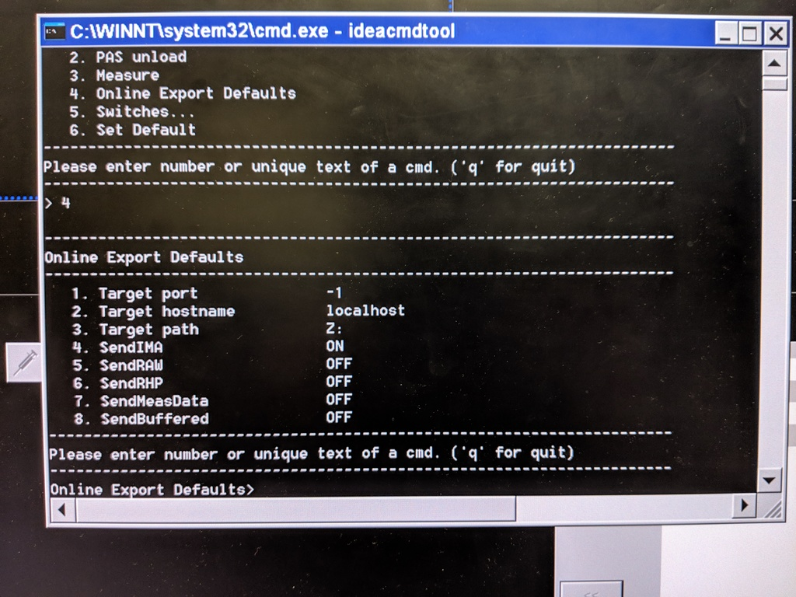
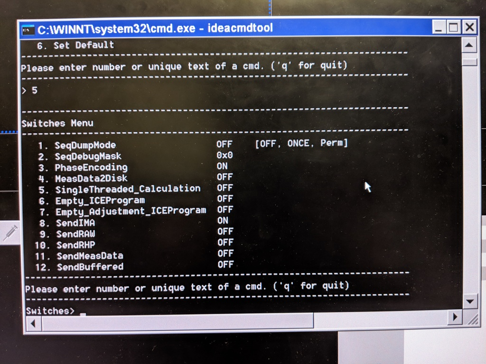

Acquiring DICOM images in real-time¶
To run a real-time experiment you need to be able to access the volumes as they are acquired. This involves connecting the real-time computer to the scanner console, and configuring the scanner to write out DICOM files in real-time.
Connecting to the scanner network¶
Connect the real-time computer to the router switch on top of the scanner console with an ethernet cable.
Take note of the real-time computer’s IP address, which should be
192.168.1.<some number>.
Configuring the scanner to write out DICOM files to that folder in real-time¶
Siemens scanners come with a useful program called ideacmdtool that can configure the scanner to write out DICOM files as they are collected. Unfortunately it is not that well documented – thanks to the FIRMM and Dynamically Adaptive Imaging projects for explaining how to configure it.
Press Ctrl-Esc to open the Windows start menu. Click on “Advanced user” to activate Advanced User mode. Talk to scanner administrators to get the authentication details.
Press Ctrl-Esc and click “Command Prompt” or click “Run” and enter
cmdin the dialog to launch the command prompt.Enter
ideacmdtoolin the command prompt to start theideacmdtoolprogram.
Configure the default settings (these steps should be performed BEFORE registering a patient):
Enter
4to go to the “Online export defaults” menuEnter
1and set “Target port” to-1Enter
3and set “Target path” toy:(or whatever path you mounted the SAMBA folder on)Enter
8to setSendBufferedtoOFFEnter
qto go back to the mainideacmdtoolmenu
Configure the session settings (these steps should be performed AFTER registering a patient, since these flags get reset every time you register a new patient):
Enter
5to go to the “Switches” menuEnter
8to setSendIMAtoONEnter
qto go back to the mainideacmdtoolmenuEnter
qto exitideacmdtool